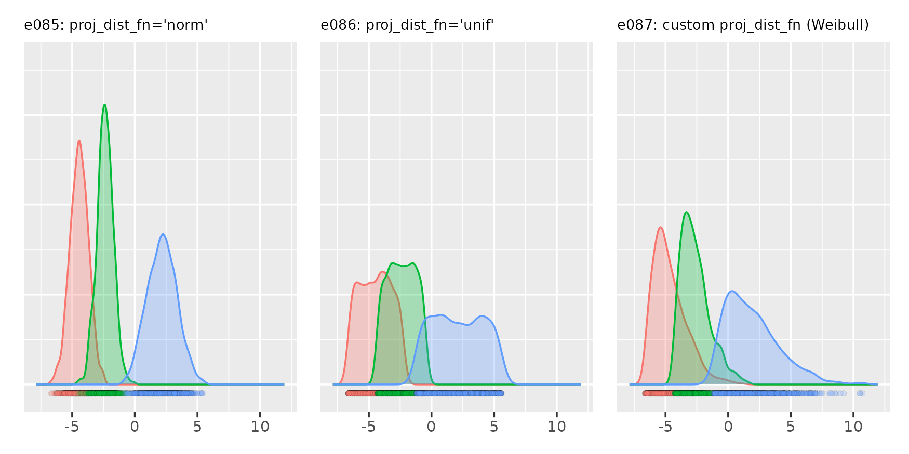
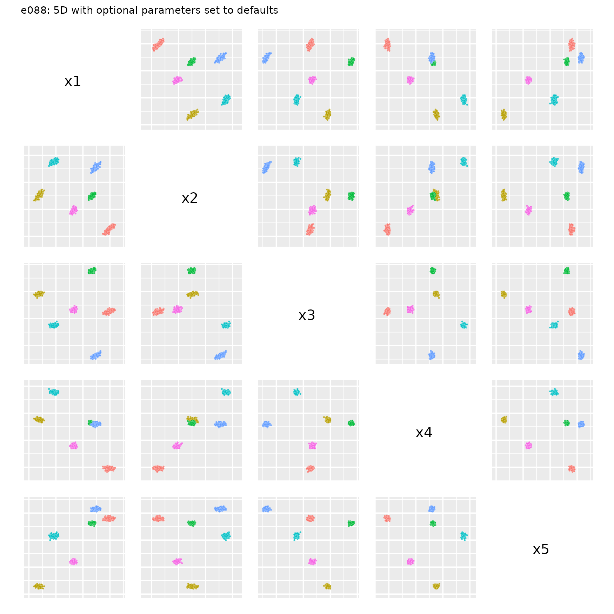
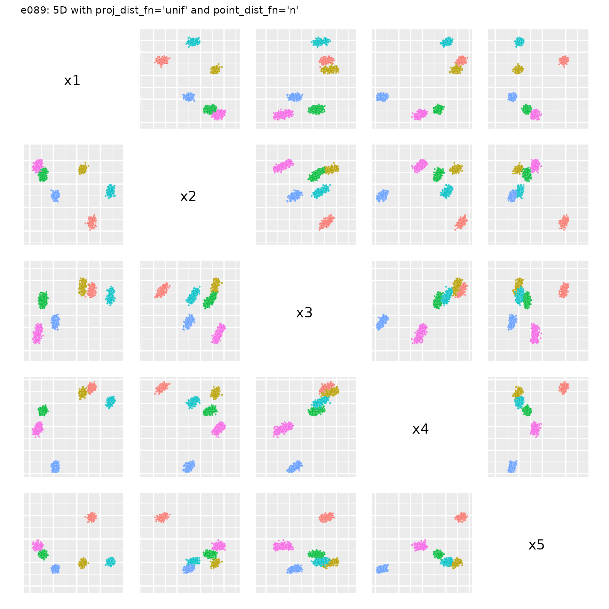

This vignette contains a number of examples on how to use
clugenr in 1D and 5D. Examples require the following setup
code:
# Load the clugenr library
library(clugenr)
# Load functions for plotting examples
source("plot_examples_1d.R", local = knitr::knit_global())
source("plot_examples_nd.R", local = knitr::knit_global())
# Keep examples reproducible in newer R versions
RNGversion("3.6.0")Basic 1D example with density plot
The 1D examples were plotted with the plot_examples_1d()
function available here.
seed <- 222
# Custom proj_dist_fn: point projections placed using the Weibull distribution
proj_wbull <- function(len, n) rweibull(n, shape = 1.5, scale = len / 2) - len / 2
e085 <- clugen(1, 3, 2000, 1, 0, 10, 6, 1.5, 0, seed = seed)
e086 <- clugen(1, 3, 2000, 1, 0, 10, 6, 1.5, 0, seed = seed, proj_dist_fn = "unif")
e087 <- clugen(1, 3, 2000, 1, 0, 10, 6, 1.5, 0, seed = seed, proj_dist_fn = proj_wbull)
plot_examples_1d(list(e = e085, t = "e085: proj_dist_fn='norm'"),
list(e = e086, t = "e086: proj_dist_fn='unif'"),
list(e = e087, t = "e087: custom proj_dist_fn (Weibull)"),
pmargin = 0.07,
ymax = 0.725)
5D example with default optional arguments
The 5D examples were plotted with the plot_examples_nd()
function available here.
nd <- 5
seed <- 321
plot_examples_nd(e088, "e088: 5D with optional parameters set to defaults")
5D example with proj_dist_fn = "unif" and
point_dist_fn = "n"
nd <- 5
seed <- 123
e089 <- clugen(nd, 6, 1500, c(0.1, 0.3, 0.5, 0.3, 0.1), pi / 12, rep.int(30, nd),
35, 5, 3.5, seed = seed,
proj_dist_fn = "unif", point_dist_fn = "n")
plot_examples_nd(e089, "e089: 5D with proj_dist_fn='unif' and point_dist_fn='n'")